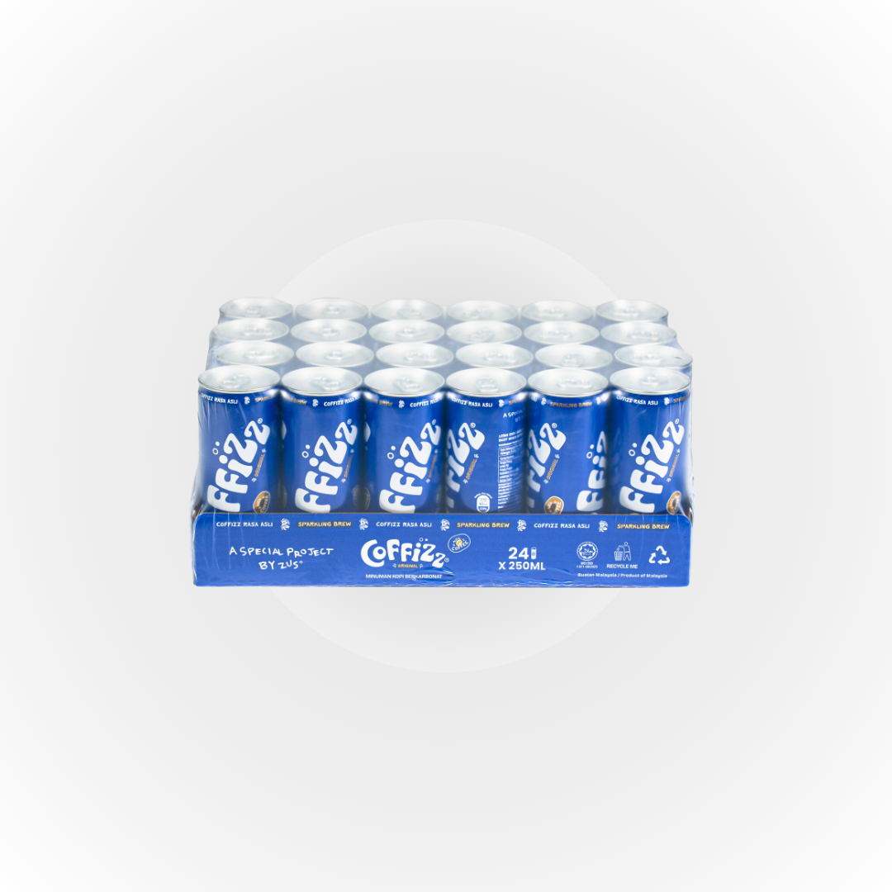

Research & topics
Use audience preferences, social feedback and competitor content to identify relevant product messages.
PROJECT 03 / INSTAGRAM · ENGLISH CONTENT
I contributed to launch content research, Instagram photography and editing, and English copy, while supporting online launches and FamilyMart communication.
COFFIZZ product reference image / Not my photography / Original image source
01 / CONTEXT & CONTRIBUTION
As an Overseas Social Media Operations Intern at Zuspresso (M) Sdn. Bhd., I worked on ZUS Coffee launch communication through research, content production, publishing and channel information.
My role focused on content execution and communication support, not independent ownership of a full launch or retail channel.
Use audience preferences, social feedback and competitor content to identify relevant product messages.
Contribute to photography, editing, English captions, hashtags and asset organisation, following the publishing schedule.
Support online launches and FamilyMart communication, track content weekly and identify the next adjustments.
02 / CONTENT RESEARCH
Research began with audience preferences, existing feedback and competitor content. These informed topics and product messaging.
Product information, use cases and purchasing details helped define the focus of each post.
Use audience preferences and social feedback to check whether product information is clear and the use case is relevant.
Find the message in user questionsReview how competitors introduce products, present use cases and explain promotions or purchasing details.
Learn from the approach without copyingUse product references and the communication schedule to identify key messages, visuals and information for the English copy.
Bring research into content preparationResearch informed topics, photography and English copy. It was not a quantitative comparison of competitor performance.
03 / INSTAGRAM CONTENT & ASSETS
I helped publish 50 Instagram posts, contributing to topics, photography, editing, English captions, hashtags and asset organisation.

Account content and product references
The account screenshot includes product, lifestyle and campaign content. My contribution covered the planning, production, English copy and publishing support described here.
The account screenshot illustrates the content mix. Product reference images below are not my photography or design work.


04 / CHANNELS & REVIEW
I supported online launches and FamilyMart retail communication by organising assets, store details, purchase links and publishing schedules.
I tracked content weekly and completed 15+ reviews, using feedback to refine topics, formats and publishing cadence.
Check that product and channel information, creative assets and timing are consistent.
Track performance and identify questions that need follow-up.
Use performance and feedback to suggest changes to topics, formats and timing.
These examples show my review approach, not user quotes, measured comparisons or verified improvements. When metrics change, check content, timing and other influences before deciding what to adjust.
Identify the product, location and channel being asked about. An enquiry is not a completed purchase.
Check whether the post includes purchasing information and whether store details or links are still accurate.
Add confirmed purchasing details and make them clearer in subsequent relevant content.
Compare available reach and engagement over the same observation window, rather than relying on one number.
Check the topic, format, publishing time and any additional promotion or campaign activity.
Propose a specific next test, such as a different opening or information order. Review it after publishing without promising an uplift.
Distinguish factual questions from personal preferences. A few comments do not represent the whole audience.
Review the original explanation and product references to confirm what can be added.
Add verified information to captions or future topics; check uncertain details with the team first.
05 / RESULTS
Post counts and reviews describe my workload. Follower growth is shown separately as an account-level result, not a gain attributable to one post or to me alone.
Topics, photography, editing, English captions, hashtags and asset organisation.
Tracked performance weekly and used interaction feedback to inform subsequent content.
Overall account change during the project period, not independently generated growth.
Scope of figuresPosts I helped publish, reviews I completed and account follower growth during the project period. Original account records are not disclosed.